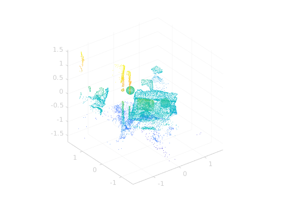
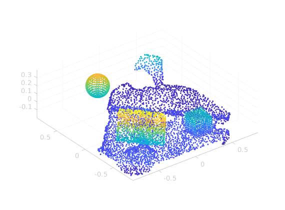
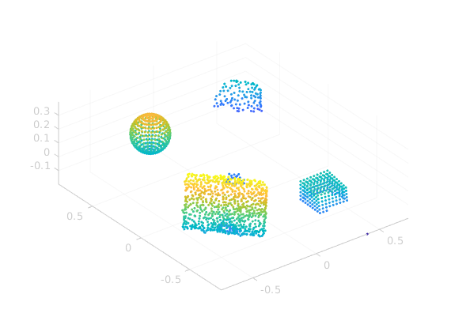
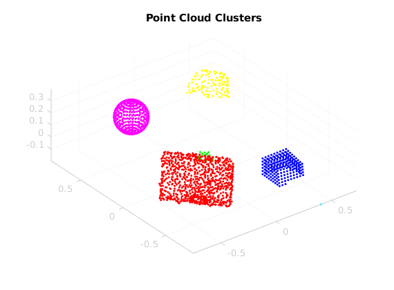
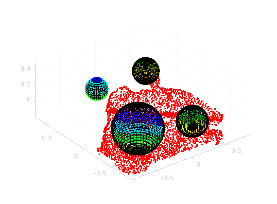
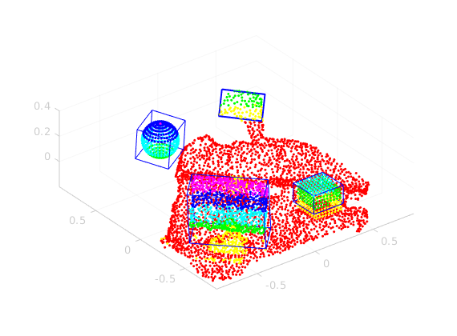

Contents
Load stl file and convert to point cloud
clc; clear; % fv = stlread('~/speciale/data/geometries/scene8-ball-cube-binary.stl') fv = stlread('~/speciale/data/geometries/scene8-smallerball-cube.stl'); ptCloudOriginal = pointCloud(fv.vertices); pcshow(ptCloudOriginal)
Find points within region of interest
UR5 radius is 0.85m - and coordinate system is anchored at UR-base.
roi = [-0.85 0.85 -0.85 0.85 -0.2 1.2];
roiIndices = findPointsInROI(ptCloudOriginal, roi);
ptCloud = select(ptCloudOriginal, roiIndices);
pcshow(ptCloud, 'MarkerSize', 40);
 Fit plane to find table
maxDist = 0.09; [model, inliers, outliers] = pcfitplane(ptCloud, maxDist); plane1 = select(ptCloud, inliers); cloudRemaining = select(ptCloud, outliers); pcshow(cloudRemaining,'MarkerSize', 40) [model, inliers, outliers] = pcfitplane(cloudRemaining, maxDist); % Segmenter endnu en plan, fordi der er niveauforskel i bordet % plane2 = select(cloudRemaining, inliers); % cloudRemaining = select(cloudRemaining, outliers); % pcshow(cloudRemaining,'MarkerSize', 40)
Cluster the remaining pointcloud
minDist = 0.11; [labels, numClusters] = pcsegdist(cloudRemaining, minDist); pcshow(cloudRemaining.Location,labels,'MarkerSize',40) colormap(hsv(numClusters)) title('Point Cloud Clusters') clusters = {}; for i = 1:numClusters cluster_points = cloudRemaining.Location(labels == i,:); clusters{i} = cluster_points; end
Threshold clusters
numPointsThreshold = 400; indices = cellfun(@(x) length(x) > numPointsThreshold, clusters); clusters = clusters(indices); numClusters = size(clusters,2);
Find bounding sphere for each cluster
boundingSpheres = {};
for i = 1:numClusters
[r, c] = ExactMinBoundSphere3D(clusters{i});
bs.radius = r;
bs.center = c;
boundingSpheres{i} = BoundingSphere(c, r);
end
Visualize the bounding spheres ontop of the scene
pcshow(ptCloud, 'MarkerSize', 40) hold on for i = 1:size(clusters, 2) r = boundingSpheres{i}.radius; c = boundingSpheres{i}.center; [x,y,z] = sphere(50); surf(c(1) + x*r, c(2) + y*r, c(3) + z*r, 'FaceAlpha', 0.2); end hold off
Find bounding box for each cluster
boundingBoxes = {};
for i = 1:numClusters
x = clusters{i}(:,1); y = clusters{i}(:,2); z = clusters{i}(:,3);
[R, cp, volume] = minboundbox(x,y,z,'v',1);
boundingBoxes{i} = BoundingBox(cp);
end
Visualize the bounding boxes
pcshow(ptCloud, 'MarkerSize', 40) for i = 1:size(clusters,2) hold on plotminbox(boundingBoxes{i}.cp,'b') end